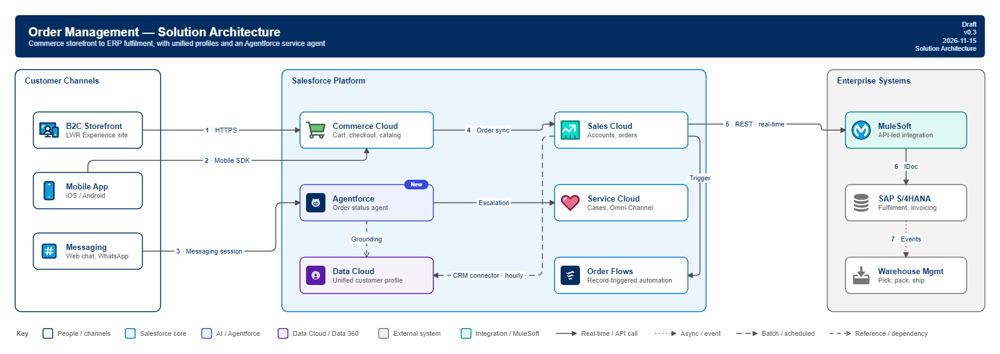

Draw 40 diagram types
From stakeholder maps to cutover plans, in the notation Salesforce teams use.
40 types · 11 layout enginesDescribe a diagram in plain language. Archistry draws it as an editable draw.io file and an interactive HTML page: 40 types, from discovery to go-live.
Free, MIT-licensed, and it runs on your machine.
Draw the solution architecture for order management: Commerce Cloud, Sales Cloud, MuleSoft to SAP, Data Cloud and an Agentforce agent.

Built for Salesforce architects, business analysts and consultants.
From stakeholder maps to cutover plans, in the notation Salesforce teams use.
40 types · 11 layout enginesEach diagram is two files that convert into each other without loss.
.drawio + .htmlImages for Word, Confluence, Google Docs and slides.
1× to 4× printOverlaps, lines through boxes and clipped labels fail the build.
Fails on overlapDraft an ERD from SFDX, a mapping from CSV, a flow diagram from XML.
SFDX · CSV · XMLNo upload and no account. It all runs on your machine.
Runs offlinePick a request. Each result is real Archistry output, unedited.
Search or pick a stage. Open any diagram live, then edit it.
Both files come from the same model and convert into each other without loss.
Export PNG, JPG or SVG for Word, Confluence and slides. Set the options, copy the command.

SVG needs only Node. PNG and JPG use the Chrome, Edge or Chromium already on your machine, headless. Without Node, use the Export menu in the HTML page. For PowerPoint, insert the SVG and choose Convert to Shape.
Point Archistry at your project and it writes the first draft of the spec.

Reads objects, key fields, lookups and master-detail links from your metadata.
archistry erd-from-sfdx ./ -o erd.json --objects Account,Case
Turns a DLO to DMO mapping sheet into a field-level diagram.
archistry mapping-from-csv mappings.csv -o mapping.json
Reads a flow-meta.xml: decisions, record operations, loops and fault paths.
archistry flow-from-metadata My_Flow.flow-meta.xml -o flow.jsonThe agent describes the diagram. The engine lays it out, checks it and writes the files.

11 layout engines place every box on a grid and route each connector around the others.
Overlaps, lines through boxes, clipped labels and low contrast are tested. A failed check fails the build.
The .drawio, the .html and any images you asked for. Each file embeds about 200 Salesforce icons.
You need Node.js 18 or later. There is nothing to npm install.
One command installs it into your agent. Update it the same way.
Name the type, the systems and who it is for.
Edit the HTML in your browser or the .drawio in draw.io.
archistry init solution-architecture -o arch.json for a complete starter spec, edit it, then archistry build arch.json --format drawio,html,png.brand.json beside your spec. Palette and font follow your brand; notation such as crow’s feet and BPMN shapes stays standard.npx skills update if you installed with npx skills add, or git pull inside the folder if you cloned it.